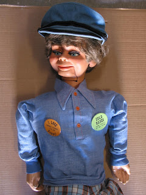
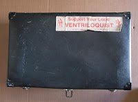

1974 Maher Figure
10/14/2010
{kind=link}

From Mark Schrader: I recently acquired a 1974 figure that you may have built. I was hoping that you could tell me a little bit about him. He's in like new condition and came in the nice case with the Maher sticker.
* * * * * *
From Mr. D: How fortunate you are - that appears to be a well cared for figure! While it is quite likely that it was sold though Maher Studios, I did not personally build it. It is one of the Knee Pal series of characters built by Craig Lovik and sold by Maher Studios in 1974. It appears to be a composition "Archie". I did make the buttons he is wearing. We sold "Dummy Buttons" (many designs) for several years.
The carrying case was also purchased from Maher Studios. It is one of the early models made of vulcanized fibre. When the quality of the fibre board available became less than pristine, our case manufacturer advised that we switch to the poly materials still being used to construct the cases I sell today. The "bumper sticker" ("Support Your Local Ventriloquist") was produced by the NAAV. When placed on a vehicle bumper they weathered and faded after a few months. But here you have one that's still readable after 35+ years!
{kind=link}

The carrying case was also purchased from Maher Studios. It is one of the early models made of vulcanized fibre. When the quality of the fibre board available became less than pristine, our case manufacturer advised that we switch to the poly materials still being used to construct the cases I sell today. The "bumper sticker" ("Support Your Local Ventriloquist") was produced by the NAAV. When placed on a vehicle bumper they weathered and faded after a few months. But here you have one that's still readable after 35+ years!
* * * * *
P.S. From Mr. D: The Archie character was one of the most popular from the Knee Pal line. It's conceivable that someone reading this has been searching for one of these as a backup, or even primary figure. Mark is offering this figure for sale. If you would like more details, contact me and I'll give you Mark's contact information.
One more comment about the custom carrying cases I'm selling today. I'm out 0f stock on the largest size #357 cases, but still have four of the #355 and two of #353 cases. You will find sizes and prices HERE .